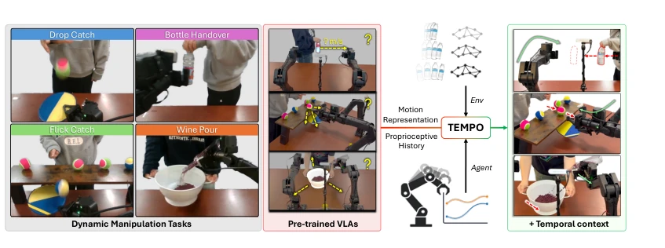
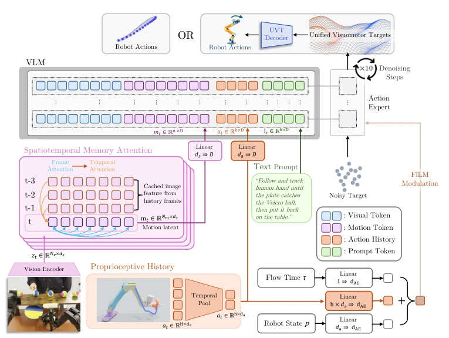

TEMPO: Learning Temporal Context for Dynamic Robot Manipulation
Zhenyang Feng, Jimin Heo, Erik B. Sudderth, Unnat Jain abspdf
论文点评Review
这篇论文给 VLA 在动态操作上的“单帧迷信”泼了盆冷水。作者没搞大模型堆参数，也没死磕推理延迟，而是直接指出瓶颈是“缺上下文”。Motion Ambiguity 和 State Aliasing 这两个概念提得很准，尤其是后者，很多 VLA 确实分不清“伸手”还是“缩手”。TEMPO 的做法其实挺“偷懒”的，直接外挂两个小模块，一个用现成视频模型抓运动，一个用 proprioceptive history 记动作，参数只加了 0.08%。效果确实猛，Bottle Handover 从 44% 拉到 74%，而且成了唯一能搞定 Wine Pour 和 Flick Catch 的。不过，依赖冻结的视频模型（如 SAM 2）会不会在复杂遮挡下失效？论文没细说。另外，TEMPO-Bench 的发布算是个良心，但 50k 帧的标注质量如何？总之，这是一篇“四两拨千斤”的论文，证明了动态任务的核心是表征而非算力，但也暴露了 VLA 在时序理解上的原始性。
—
研究动机Motivation
现有的 Vision-Language-Action (VLA) 模型在准静态任务上表现优异 [1, 2]，但在动态操作中频频翻车。根本原因在于它们基于马尔可夫假设，仅依赖单帧观测，导致两个致命缺陷：一是 Motion Ambiguity，单帧无法预测移动物体的未来状态，导致抓取时机错误；二是 State Aliasing，任务不同阶段（如抓取 vs 释放）视觉相似但动作相反，单帧无法区分。虽然已有工作如 RTC [4] 和 VLASH [5] 通过异步推理减少延迟，但这只是治标不治本，即便观测更新，单帧仍缺乏演化信息。作者指出瓶颈在于缺失 temporal context，而非模型容量或推理速度，因此需要引入显式的时序信号来增强表征能力，这是解决动态操作泛化性的关键一步。
—

Figure 1: TEMPO makes a pretrained VLA motion-aware. Four dynamic tasks (left) in which the target object is in motion throughout the episode. A standard VLA, conditioned on a single observation, cannot determine how the scene is evolving (center, red; “? m/s”) and cannot disam- biguate perceptually identical observations that arise at different phases of the same task, producing failed grasps and mistimed actions. TEMPO resolves both failure modes by augmenting the policy with two compact signals: TEMPOMOT, a motion representation from a frozen video foundation model, and TEMPOACT, a compact proprioceptive history providing subtask context. Together they enable reliable task completion across all four tasks (right, green).
Figure 4: Task Setup. We benchmark all models across four comprehensive dynamic tasks.
实验Experiments
作者在双机械臂平台上测试了四个动态任务：Bottle Handover, Drop Catch, Flick Catch, Wine Pour。基线包括 RTC [4] 和 VLASH [5]。结果显示，TEMPO 在 Bottle Handover 成功率从 44% 提升至 74%，且是唯一能完成完整版 Wine Pour 和 Flick Catch（基线为 0%）的方法。消融实验证明 TEMPOMOT 和 TEMPOACT 各自独立有效，移除任一都会导致性能下降。Hidden state probing 显示 TEMPO 的隐藏状态能线性解码物体速度，而基线几乎无法解码。此外，作者还发布了 TEMPO-Bench 数据集。值得注意的是，Drop Catch 任务中异步推理（RTC）表现更好，说明时序表征与执行延迟优化是互补的，TEMPO 并非万能，但在时序表征缺失的场景下效果显著。
—
其他图片Other Figures

Figure 3: TEMPO architecture. TEMPO augments a pretrained VLM-based policy with two temporal inputs. TEMPOMOT cross-attends the current frame’s patch features ft against a streaming cache Ft of features from the preceding W −1 frames, producing a motion code mt that encodes scene dynamics. TEMPOACT mean pools the robot’s recent proprioceptive command history into K fixed-size buckets, yielding a compact summary ct. Both signals attach to the pretrained backbone with near-zero overhead: mt and ct are projected to the VLM’s token dimension and appended to its prefix, and ct additionally conditions the action expert via an AdaRMS residual.